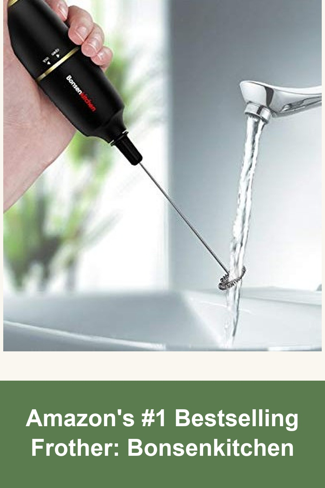
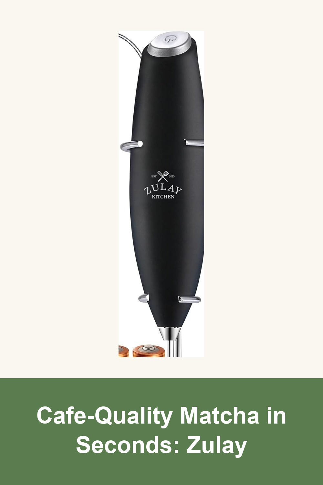
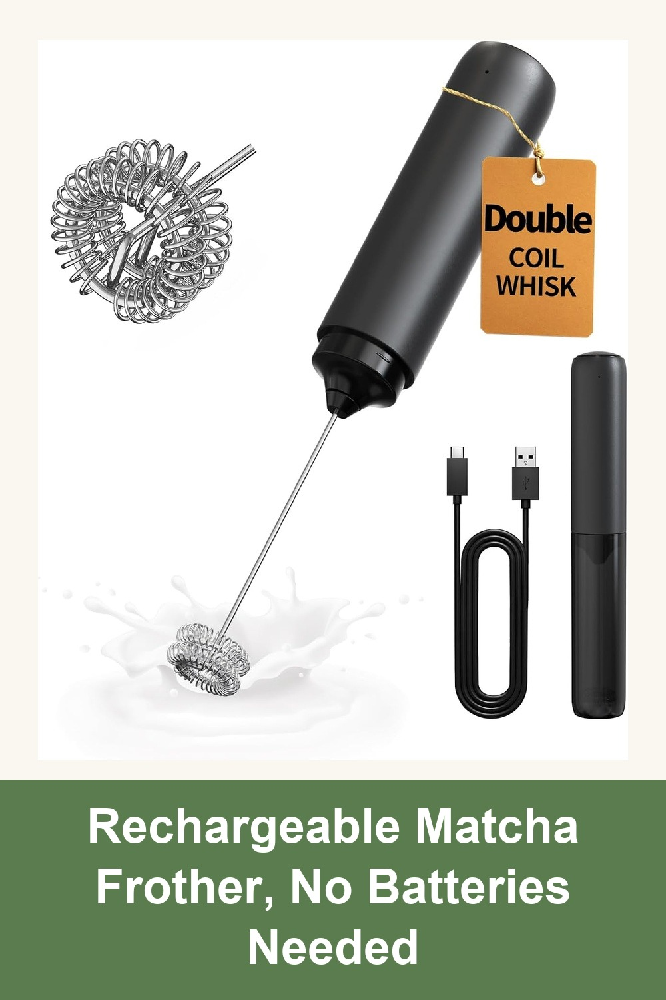

Bonsenkitchen Electric Milk Frother, Handheld Coffee Milk Foamer with 3 Whisk
With over 238,000 reviews, this is Amazon's best-selling handheld frother — battery-operated, dissolves matcha powder into a smooth, clump-free froth in seconds.
I have been using this daily for about a week now. I use it when making matcha. Froths it up beautifully! Very powerful and works flawlessly! Cleans up nicely under hot running water.— verified Amazon buyer
View on Amazon →
Zulay Kitchen Powerful Milk Frother Wand With Duracell Batteries - Z1 Motor
Zulay's Z1 motor whips matcha powder into a silky, foamy latte in under 15 seconds — no clumps, no bamboo whisk technique required, batteries included.
I was pleasantly surprised by how well this frother works. It was very easy to assemble, feels comfortable to hold, and produced a rich, creamy foam in just a few seconds. What stood out most was how quickly it transformed my morning drink into something that felt more like a café-style treat at home.— verified Amazon buyer
View on Amazon →
CIRCLE JOY Rechargeable Milk Frother Handheld, Dual Coil Whisk Head
Circle Joy's USB-rechargeable frother uses a double coil whisk for extra-rich foam — a modern, cordless upgrade to the traditional bamboo chasen.
We absolutely love this rechargeable frother! We use it every single day and it works great every time. It creates a nice, smooth froth quickly and has plenty of power. It's convenient, easy to use, and has become part of our daily routine.— verified Amazon buyer
View on Amazon →